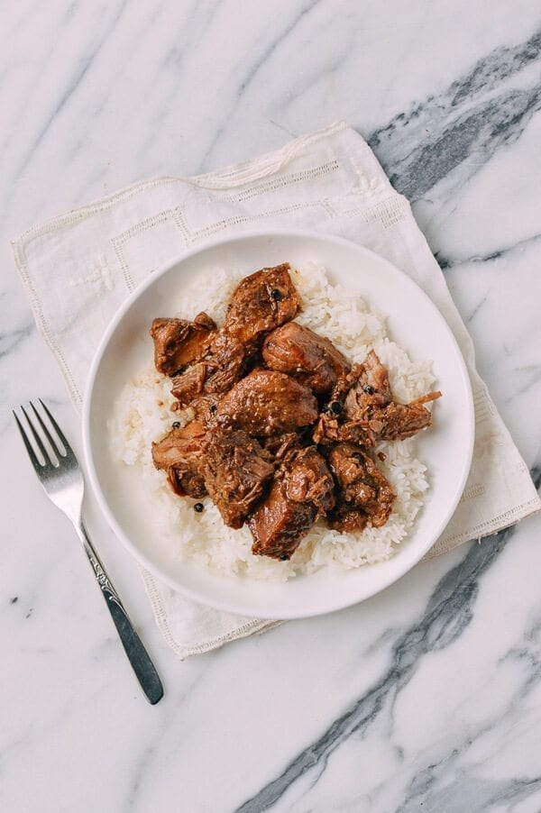

Pork Adobo

Tasty Details
This dish is one of my favorite dishes to make. It has minimal prep and great flavors. My favorite time to make it is on a Sunday night. That way I have plenty of leftovers for Monday at lunch.
Ingredients
- 3 tablespoons of vegetable oil
- 2 pounds of pork shoulder
- 1/4 of a cup of white vinegar
- 1/3 of a cup of soy sauce
- 8 golves of garlic
- 2 bay leaves
- 2 tablespoons of ground black pepper
- 2 teaspoons of sugar
- 2 cups of water or vegetable broth
- 2 dried arbol peppers (optional)
- 1 medium yellow onion
Steps
- In a medium dutch oven or pot over medium high heat, add the oil and sear the pork until browned on all sides.
- Finely dice and add the onion. Cook for 3-4 minutes
- Add the vinegar, soy sauce, dried pepper, garlic, bay leaf, peppercorns (tied in cheese cloth if desired), sugar, and water, and bring to a boil. Reduce the heat to medium low, cover, and simmer for 1 hour.
- Remove the cover and continue simmering for another 30 minutes to reduce the sauce.
- Serve over your favorite type of rice!